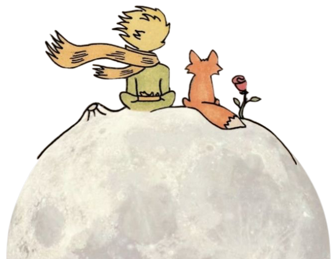

Работаю с тревогой, выгоранием, трудностями в отношениях и самооценкой. Ниже — коротко о том, как проходят встречи и сколько стоит консультация.
Меня зовут Артём, я практикующий психолог с двенадцатилетним опытом. Работаю с людьми, которым трудно молчать о том, что происходит внутри. Окончил факультет психологии, прошёл длительную подготовку по человекоцентрированному подходу, регулярно прохожу личную терапию и супервизию.
До психологии работал в другой сфере и хорошо знаю, как выглядит выгорание изнутри. Поэтому о работе, деньгах и усталости говорю так же серьёзно, как о детских историях.
Поводом редко становится одна большая причина. Чаще это накопившееся: не спится, всё раздражает, вроде всё в порядке — а радости нет.
Вы — эксперт по своей жизни. Моя работа — создать условия, в которых это снова слышно.
Ничего из сказанного вами не будет оценено. Здесь не нужно быть удобным клиентом.
Я остаюсь живым человеком в кабинете, а не нейтральной фигурой без реакций.
Мы не идём глубже, чем вы готовы сегодня. Пауза — тоже часть работы.
Короткий разговор без оплаты: вы рассказываете, что происходит, я — как могу быть полезен.
Три-четыре сессии, чтобы осмотреться и сформулировать, к чему идём.
Раз в неделю, в фиксированное время. Регулярность важнее интенсивности.
Терапию заканчивают, а не бросают: на это отводятся отдельные встречи.
Отмена без оплаты — не позднее чем за сутки. Для студентов и людей в трудной ситуации есть несколько мест по сниженной стоимости.
Напишите пару слов о том, что происходит. Я отвечаю в течение дня и предложу время для знакомства.
